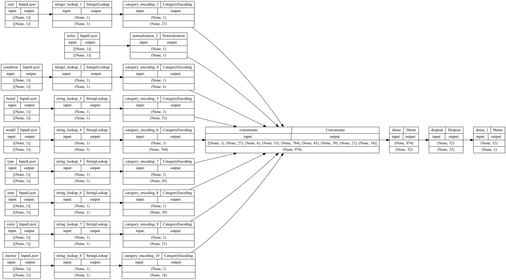

Keras
Inhalt
Keras¶
Keras Model¶
Load Packages¶
import numpy as np
import pandas as pd
import tensorflow as tf
from tensorflow.keras import layers
import keras_tuner as kt
tf.__version__
'2.8.1'
# import dataset
raw_dataset = pd.read_csv("car_prices.csv", on_bad_lines="skip")
df = raw_dataset.copy()
df.head()
| year | make | model | trim | body | transmission | vin | state | condition | odometer | color | interior | seller | mmr | sellingprice | saledate | |
|---|---|---|---|---|---|---|---|---|---|---|---|---|---|---|---|---|
| 0 | 2015 | Kia | Sorento | LX | SUV | automatic | 5xyktca69fg566472 | ca | 5.0 | 16639.0 | white | black | kia motors america, inc | 20500 | 21500 | Tue Dec 16 2014 12:30:00 GMT-0800 (PST) |
| 1 | 2015 | Kia | Sorento | LX | SUV | automatic | 5xyktca69fg561319 | ca | 5.0 | 9393.0 | white | beige | kia motors america, inc | 20800 | 21500 | Tue Dec 16 2014 12:30:00 GMT-0800 (PST) |
| 2 | 2014 | BMW | 3 Series | 328i SULEV | Sedan | automatic | wba3c1c51ek116351 | ca | 4.5 | 1331.0 | gray | black | financial services remarketing (lease) | 31900 | 30000 | Thu Jan 15 2015 04:30:00 GMT-0800 (PST) |
| 3 | 2015 | Volvo | S60 | T5 | Sedan | automatic | yv1612tb4f1310987 | ca | 4.1 | 14282.0 | white | black | volvo na rep/world omni | 27500 | 27750 | Thu Jan 29 2015 04:30:00 GMT-0800 (PST) |
| 4 | 2014 | BMW | 6 Series Gran Coupe | 650i | Sedan | automatic | wba6b2c57ed129731 | ca | 4.3 | 2641.0 | gray | black | financial services remarketing (lease) | 66000 | 67000 | Thu Dec 18 2014 12:30:00 GMT-0800 (PST) |
df.info()
<class 'pandas.core.frame.DataFrame'>
RangeIndex: 558811 entries, 0 to 558810
Data columns (total 16 columns):
# Column Non-Null Count Dtype
--- ------ -------------- -----
0 year 558811 non-null int64
1 make 548510 non-null object
2 model 548412 non-null object
3 trim 548160 non-null object
4 body 545616 non-null object
5 transmission 493458 non-null object
6 vin 558811 non-null object
7 state 558811 non-null object
8 condition 547017 non-null float64
9 odometer 558717 non-null float64
10 color 558062 non-null object
11 interior 558062 non-null object
12 seller 558811 non-null object
13 mmr 558811 non-null int64
14 sellingprice 558811 non-null int64
15 saledate 558811 non-null object
dtypes: float64(2), int64(3), object(11)
memory usage: 68.2+ MB
# drop column with too many missing values
df = df.drop(['transmission'], axis=1)
# drop remaining row with one missing value
df = df.dropna()
# Drop irrelevant features
df = df.drop(['trim', 'vin', 'mmr', 'saledate', 'seller'], axis=1)
# rename columns
df = df.rename(columns={
"make" : "brand",
"body" : "type",
"odometer" : "miles"}
)
# transform into lowercase
df["brand"] = df["brand"].str.lower()
df["model"] = df["model"].str.lower()
df["type"] = df["type"].str.lower()
Define label¶
y_label = 'sellingprice'
Data format¶
# Make a dictionary with int64 features as keys and np.int32 as values
int_32 = dict.fromkeys(df.select_dtypes(np.int64).columns, np.int32)
# Change all columns from dictionary
df = df.astype(int_32)
# Make a dictionary with float64 columns as keys and np.float32 as values
float_32 = dict.fromkeys(df.select_dtypes(np.float64).columns, np.float32)
df = df.astype(float_32)
int_32
{'year': numpy.int32, 'sellingprice': numpy.int32}
# Convert to categorical
# make a list of all categorical variables
cat_convert = ["brand", "model", "type", "state", "color", "interior"]
# convert variables
for i in cat_convert:
df[i] = df[i].astype("string")
# Convert to category
df['year'] = df['year'].astype("category")
df['condition'] = df['condition'].astype("category")
df.info()
<class 'pandas.core.frame.DataFrame'>
Int64Index: 533660 entries, 0 to 558810
Data columns (total 10 columns):
# Column Non-Null Count Dtype
--- ------ -------------- -----
0 year 533660 non-null category
1 brand 533660 non-null string
2 model 533660 non-null string
3 type 533660 non-null string
4 state 533660 non-null string
5 condition 533660 non-null category
6 miles 533660 non-null float32
7 color 533660 non-null string
8 interior 533660 non-null string
9 sellingprice 533660 non-null int32
dtypes: category(2), float32(1), int32(1), string(6)
memory usage: 33.6 MB
# Make list of all numerical data (except label)
list_num = df.drop(columns=[y_label]).select_dtypes(include=[np.number]).columns.tolist()
# Make list of all categorical data which is stored as integers (except label)
list_cat_int = df.drop(columns=[y_label]).select_dtypes(include=['category']).columns.tolist()
# Make list of all categorical data which is stored as string (except label)
list_cat_string = df.drop(columns=[y_label]).select_dtypes(include=['string']).columns.tolist()
list_num
['miles']
list_cat_int
['year', 'condition']
df.info()
<class 'pandas.core.frame.DataFrame'>
Int64Index: 533660 entries, 0 to 558810
Data columns (total 10 columns):
# Column Non-Null Count Dtype
--- ------ -------------- -----
0 year 533660 non-null category
1 brand 533660 non-null string
2 model 533660 non-null string
3 type 533660 non-null string
4 state 533660 non-null string
5 condition 533660 non-null category
6 miles 533660 non-null float32
7 color 533660 non-null string
8 interior 533660 non-null string
9 sellingprice 533660 non-null int32
dtypes: category(2), float32(1), int32(1), string(6)
memory usage: 33.6 MB
Data Splitting¶
# Make test data
df_test = df.sample(frac=0.2, random_state=1337)
# Create training data
df_train = df.drop(df_test.index)
print(
"Using %d samples for training and %d for validation"
% (len(df_train), len(df_test))
)
Using 426928 samples for training and 106732 for validation
Transform to Tensors¶
# Define a function to create our tensors
def dataframe_to_dataset(dataframe, shuffle=True, batch_size=32):
df = dataframe.copy()
labels = df.pop(y_label) #pick y_label and delete
ds = tf.data.Dataset.from_tensor_slices((dict(df), labels)) #ds for tensors
if shuffle:
ds = ds.shuffle(buffer_size=10000) #len(dataframe)
ds = ds.batch(batch_size)
df = ds.prefetch(batch_size)
return ds
batch_size = 32
ds_train = dataframe_to_dataset(df_train, shuffle=True, batch_size=batch_size)
ds_test = dataframe_to_dataset(df_test, shuffle=True, batch_size=batch_size)
/Users/hendrikpfeifer/opt/anaconda3/envs/tf2/lib/python3.9/site-packages/tensorflow/python/data/util/structure.py:485: FutureWarning: Index.ravel returning ndarray is deprecated; in a future version this will return a view on self.
raise TypeError("Could not build a `TypeSpec` for {} with type {}".format(
/Users/hendrikpfeifer/opt/anaconda3/envs/tf2/lib/python3.9/site-packages/tensorflow/python/data/util/structure.py:485: FutureWarning: Index.ravel returning ndarray is deprecated; in a future version this will return a view on self.
raise TypeError("Could not build a `TypeSpec` for {} with type {}".format(
ds_train
<BatchDataset element_spec=({'year': TensorSpec(shape=(None,), dtype=tf.int64, name=None), 'brand': TensorSpec(shape=(None,), dtype=tf.string, name=None), 'model': TensorSpec(shape=(None,), dtype=tf.string, name=None), 'type': TensorSpec(shape=(None,), dtype=tf.string, name=None), 'state': TensorSpec(shape=(None,), dtype=tf.string, name=None), 'condition': TensorSpec(shape=(None,), dtype=tf.float64, name=None), 'miles': TensorSpec(shape=(None,), dtype=tf.float32, name=None), 'color': TensorSpec(shape=(None,), dtype=tf.string, name=None), 'interior': TensorSpec(shape=(None,), dtype=tf.string, name=None)}, TensorSpec(shape=(None,), dtype=tf.int32, name=None))>
Feature preprocessing¶
Numerical preprocessing function¶
# Define numerical preprocessing function
def get_normalization_layer(name, dataset):
# Create a Normalization layer for our feature
normalizer = layers.Normalization(axis=None)
# Prepare a dataset that only yields our feature
feature_ds = dataset.map(lambda x, y: x[name])
# Learn the statistics of the data
normalizer.adapt(feature_ds)
# Normalize the input feature
return normalizer
Categorical preprocessing function¶
def get_category_encoding_layer(name, dataset, dtype, max_tokens=None):
# Create a layer that turns strings into integer indices.
if dtype == 'string':
index = layers.StringLookup(max_tokens=max_tokens)
# Otherwise, create a layer that turns integer values into integer indices.
else:
index = layers.IntegerLookup(max_tokens=max_tokens) #, output_mode='multi_hot'
# Prepare a `tf.data.Dataset` that only yields the feature.
feature_ds = dataset.map(lambda x, y: x[name])
# Learn the set of possible values and assign them a fixed integer index.
index.adapt(feature_ds)
# Encode the integer indices.
encoder = layers.CategoryEncoding(num_tokens=index.vocabulary_size())
# Apply multi-hot encoding to the indices. The lambda function captures the
# layer, so you can use them, or include them in the Keras Functional model later.
return lambda feature: encoder(index(feature))
Data preprocessing¶
all_inputs = []
encoded_features = []
Numercial preprocessing¶
# Numerical features
for feature in list_num:
numeric_feature = tf.keras.Input(shape=(1,), name=feature)
normalization_layer = get_normalization_layer(feature, ds_train)
encoded_numeric_feature = normalization_layer(numeric_feature)
all_inputs.append(numeric_feature)
encoded_features.append(encoded_numeric_feature)
encoded_features
[<KerasTensor: shape=(None, 1) dtype=float32 (created by layer 'normalization_2')>]
Categorical preprocessing¶
for feature in list_cat_int:
categorical_feature = tf.keras.Input(shape=(1,), name=feature, dtype='int32')
encoding_layer = get_category_encoding_layer(name=feature,
dataset=ds_train,
dtype='int32',
max_tokens=None)
encoded_categorical_feature = encoding_layer(categorical_feature)
all_inputs.append(categorical_feature)
encoded_features.append(encoded_categorical_feature)
for feature in list_cat_string:
categorical_feature = tf.keras.Input(shape=(1,), name=feature, dtype='string')
encoding_layer = get_category_encoding_layer(name=feature,
dataset=ds_train,
dtype='string',
max_tokens=None)
encoded_categorical_feature = encoding_layer(categorical_feature)
all_inputs.append(categorical_feature)
encoded_features.append(encoded_categorical_feature)
#Merge
all_features = layers.concatenate(encoded_features)
all_features
<KerasTensor: shape=(None, 974) dtype=float32 (created by layer 'concatenate')>
all_inputs
[<KerasTensor: shape=(None, 1) dtype=float32 (created by layer 'miles')>,
<KerasTensor: shape=(None, 1) dtype=int32 (created by layer 'year')>,
<KerasTensor: shape=(None, 1) dtype=int32 (created by layer 'condition')>,
<KerasTensor: shape=(None, 1) dtype=string (created by layer 'brand')>,
<KerasTensor: shape=(None, 1) dtype=string (created by layer 'model')>,
<KerasTensor: shape=(None, 1) dtype=string (created by layer 'type')>,
<KerasTensor: shape=(None, 1) dtype=string (created by layer 'state')>,
<KerasTensor: shape=(None, 1) dtype=string (created by layer 'color')>,
<KerasTensor: shape=(None, 1) dtype=string (created by layer 'interior')>]
# First layer
x = layers.Dense(32, activation="relu")(all_features)
# Dropout to prevent overvitting
x = layers.Dropout(0.5)(x)
# Output layer
output = layers.Dense(1)(x)
# Group all layers
model = tf.keras.Model(all_inputs, output)
model.summary()
Model: "model"
__________________________________________________________________________________________________
Layer (type) Output Shape Param # Connected to
==================================================================================================
year (InputLayer) [(None, 1)] 0 []
condition (InputLayer) [(None, 1)] 0 []
brand (InputLayer) [(None, 1)] 0 []
model (InputLayer) [(None, 1)] 0 []
type (InputLayer) [(None, 1)] 0 []
state (InputLayer) [(None, 1)] 0 []
color (InputLayer) [(None, 1)] 0 []
interior (InputLayer) [(None, 1)] 0 []
miles (InputLayer) [(None, 1)] 0 []
integer_lookup_1 (IntegerLooku (None, 1) 0 ['year[0][0]']
p)
integer_lookup_2 (IntegerLooku (None, 1) 0 ['condition[0][0]']
p)
string_lookup_3 (StringLookup) (None, 1) 0 ['brand[0][0]']
string_lookup_4 (StringLookup) (None, 1) 0 ['model[0][0]']
string_lookup_5 (StringLookup) (None, 1) 0 ['type[0][0]']
string_lookup_6 (StringLookup) (None, 1) 0 ['state[0][0]']
string_lookup_7 (StringLookup) (None, 1) 0 ['color[0][0]']
string_lookup_8 (StringLookup) (None, 1) 0 ['interior[0][0]']
normalization_2 (Normalization (None, 1) 3 ['miles[0][0]']
)
category_encoding_3 (CategoryE (None, 27) 0 ['integer_lookup_1[0][0]']
ncoding)
category_encoding_4 (CategoryE (None, 6) 0 ['integer_lookup_2[0][0]']
ncoding)
category_encoding_5 (CategoryE (None, 53) 0 ['string_lookup_3[0][0]']
ncoding)
category_encoding_6 (CategoryE (None, 764) 0 ['string_lookup_4[0][0]']
ncoding)
category_encoding_7 (CategoryE (None, 45) 0 ['string_lookup_5[0][0]']
ncoding)
category_encoding_8 (CategoryE (None, 39) 0 ['string_lookup_6[0][0]']
ncoding)
category_encoding_9 (CategoryE (None, 21) 0 ['string_lookup_7[0][0]']
ncoding)
category_encoding_10 (Category (None, 18) 0 ['string_lookup_8[0][0]']
Encoding)
concatenate (Concatenate) (None, 974) 0 ['normalization_2[0][0]',
'category_encoding_3[0][0]',
'category_encoding_4[0][0]',
'category_encoding_5[0][0]',
'category_encoding_6[0][0]',
'category_encoding_7[0][0]',
'category_encoding_8[0][0]',
'category_encoding_9[0][0]',
'category_encoding_10[0][0]']
dense (Dense) (None, 32) 31200 ['concatenate[0][0]']
dropout (Dropout) (None, 32) 0 ['dense[0][0]']
dense_1 (Dense) (None, 1) 33 ['dropout[0][0]']
==================================================================================================
Total params: 31,236
Trainable params: 31,233
Non-trainable params: 3
__________________________________________________________________________________________________
model.compile(optimizer="adam",
loss ="mse",
metrics=["mean_absolute_error"])
tf.keras.utils.plot_model(model, show_shapes=True, rankdir="LR")

Training¶
# will stop training when there is no improvement in 3 consecutive epochs
callback = tf.keras.callbacks.EarlyStopping(monitor='loss', patience=3)
model.fit(ds_train,
epochs=50,
validation_data=ds_test,
callbacks=[callback]
)
Epoch 1/50
13342/13342 [==============================] - 35s 3ms/step - loss: 152275808.0000 - mean_absolute_error: 8808.7422 - val_loss: 56295200.0000 - val_mean_absolute_error: 4911.3462
Epoch 2/50
13342/13342 [==============================] - 35s 3ms/step - loss: 59351148.0000 - mean_absolute_error: 5068.6060 - val_loss: 37074240.0000 - val_mean_absolute_error: 3694.5410
Epoch 3/50
13342/13342 [==============================] - 35s 3ms/step - loss: 49639792.0000 - mean_absolute_error: 4579.6631 - val_loss: 30598140.0000 - val_mean_absolute_error: 3232.2419
Epoch 4/50
13342/13342 [==============================] - 35s 3ms/step - loss: 44800732.0000 - mean_absolute_error: 4325.5830 - val_loss: 26991852.0000 - val_mean_absolute_error: 2962.8081
Epoch 5/50
13342/13342 [==============================] - 35s 3ms/step - loss: 41898644.0000 - mean_absolute_error: 4170.7861 - val_loss: 24746158.0000 - val_mean_absolute_error: 2799.0955
Epoch 6/50
13342/13342 [==============================] - 35s 3ms/step - loss: 39780328.0000 - mean_absolute_error: 4063.5859 - val_loss: 23071256.0000 - val_mean_absolute_error: 2677.4524
Epoch 7/50
13342/13342 [==============================] - 35s 3ms/step - loss: 38575844.0000 - mean_absolute_error: 3989.2959 - val_loss: 21679844.0000 - val_mean_absolute_error: 2567.0815
Epoch 8/50
13342/13342 [==============================] - 38s 3ms/step - loss: 37058932.0000 - mean_absolute_error: 3902.0889 - val_loss: 20488644.0000 - val_mean_absolute_error: 2469.1213
Epoch 9/50
13342/13342 [==============================] - 39s 3ms/step - loss: 35807928.0000 - mean_absolute_error: 3824.6069 - val_loss: 19413038.0000 - val_mean_absolute_error: 2385.9883
Epoch 10/50
13342/13342 [==============================] - 35s 3ms/step - loss: 35074708.0000 - mean_absolute_error: 3776.6772 - val_loss: 18734628.0000 - val_mean_absolute_error: 2330.6360
Epoch 11/50
13342/13342 [==============================] - 36s 3ms/step - loss: 34201020.0000 - mean_absolute_error: 3732.0967 - val_loss: 17921522.0000 - val_mean_absolute_error: 2279.5442
Epoch 12/50
13342/13342 [==============================] - 41s 3ms/step - loss: 33397498.0000 - mean_absolute_error: 3693.8030 - val_loss: 17331238.0000 - val_mean_absolute_error: 2241.8838
Epoch 13/50
13342/13342 [==============================] - 42s 3ms/step - loss: 33114384.0000 - mean_absolute_error: 3673.7539 - val_loss: 16784784.0000 - val_mean_absolute_error: 2207.9753
Epoch 14/50
13342/13342 [==============================] - 42s 3ms/step - loss: 32400640.0000 - mean_absolute_error: 3644.1982 - val_loss: 16318108.0000 - val_mean_absolute_error: 2179.0481
Epoch 15/50
13342/13342 [==============================] - 44s 3ms/step - loss: 31976950.0000 - mean_absolute_error: 3626.8489 - val_loss: 15925613.0000 - val_mean_absolute_error: 2159.2202
Epoch 16/50
13342/13342 [==============================] - 42s 3ms/step - loss: 31665936.0000 - mean_absolute_error: 3606.4890 - val_loss: 15573626.0000 - val_mean_absolute_error: 2133.7100
Epoch 17/50
13342/13342 [==============================] - 39s 3ms/step - loss: 31177768.0000 - mean_absolute_error: 3586.6160 - val_loss: 15105630.0000 - val_mean_absolute_error: 2107.8789
Epoch 18/50
13342/13342 [==============================] - 39s 3ms/step - loss: 31217334.0000 - mean_absolute_error: 3584.0356 - val_loss: 14877971.0000 - val_mean_absolute_error: 2093.7629
Epoch 19/50
13342/13342 [==============================] - 38s 3ms/step - loss: 30758344.0000 - mean_absolute_error: 3569.1284 - val_loss: 14596781.0000 - val_mean_absolute_error: 2076.2759
Epoch 20/50
13342/13342 [==============================] - 38s 3ms/step - loss: 30365196.0000 - mean_absolute_error: 3546.0776 - val_loss: 14330178.0000 - val_mean_absolute_error: 2061.4685
Epoch 21/50
13342/13342 [==============================] - 39s 3ms/step - loss: 30299222.0000 - mean_absolute_error: 3538.6226 - val_loss: 14093704.0000 - val_mean_absolute_error: 2048.7251
Epoch 22/50
13342/13342 [==============================] - 42s 3ms/step - loss: 29846986.0000 - mean_absolute_error: 3531.3201 - val_loss: 14016421.0000 - val_mean_absolute_error: 2050.9180
Epoch 23/50
13342/13342 [==============================] - 38s 3ms/step - loss: 29683514.0000 - mean_absolute_error: 3512.0923 - val_loss: 13711444.0000 - val_mean_absolute_error: 2023.4587
Epoch 24/50
13342/13342 [==============================] - 38s 3ms/step - loss: 29667656.0000 - mean_absolute_error: 3504.5820 - val_loss: 13527367.0000 - val_mean_absolute_error: 2015.2454
Epoch 25/50
13342/13342 [==============================] - 41s 3ms/step - loss: 29334934.0000 - mean_absolute_error: 3498.8914 - val_loss: 13410439.0000 - val_mean_absolute_error: 2007.4374
Epoch 26/50
13342/13342 [==============================] - 40s 3ms/step - loss: 28995790.0000 - mean_absolute_error: 3491.3010 - val_loss: 13202462.0000 - val_mean_absolute_error: 1994.1824
Epoch 27/50
13342/13342 [==============================] - 45s 3ms/step - loss: 29019868.0000 - mean_absolute_error: 3482.1360 - val_loss: 12985563.0000 - val_mean_absolute_error: 1976.6328
Epoch 28/50
13342/13342 [==============================] - 51s 4ms/step - loss: 28928882.0000 - mean_absolute_error: 3480.5269 - val_loss: 12890350.0000 - val_mean_absolute_error: 1974.9897
Epoch 29/50
13342/13342 [==============================] - 46s 3ms/step - loss: 28882128.0000 - mean_absolute_error: 3476.4946 - val_loss: 12774699.0000 - val_mean_absolute_error: 1968.5656
Epoch 30/50
13342/13342 [==============================] - 43s 3ms/step - loss: 28537614.0000 - mean_absolute_error: 3462.2449 - val_loss: 12596191.0000 - val_mean_absolute_error: 1956.6665
Epoch 31/50
13342/13342 [==============================] - 43s 3ms/step - loss: 28429356.0000 - mean_absolute_error: 3457.7693 - val_loss: 12400688.0000 - val_mean_absolute_error: 1941.7676
Epoch 32/50
13342/13342 [==============================] - 44s 3ms/step - loss: 28285156.0000 - mean_absolute_error: 3451.3931 - val_loss: 12370147.0000 - val_mean_absolute_error: 1944.5142
Epoch 33/50
13342/13342 [==============================] - 44s 3ms/step - loss: 28235030.0000 - mean_absolute_error: 3447.1870 - val_loss: 12228117.0000 - val_mean_absolute_error: 1932.7429
Epoch 34/50
13342/13342 [==============================] - 42s 3ms/step - loss: 27956286.0000 - mean_absolute_error: 3442.6331 - val_loss: 12154395.0000 - val_mean_absolute_error: 1931.5278
Epoch 35/50
13342/13342 [==============================] - 40s 3ms/step - loss: 28091092.0000 - mean_absolute_error: 3443.6538 - val_loss: 11986895.0000 - val_mean_absolute_error: 1916.3801
Epoch 36/50
13342/13342 [==============================] - 37s 3ms/step - loss: 27824778.0000 - mean_absolute_error: 3423.6094 - val_loss: 11871590.0000 - val_mean_absolute_error: 1905.6835
Epoch 37/50
13342/13342 [==============================] - 38s 3ms/step - loss: 27759402.0000 - mean_absolute_error: 3428.3552 - val_loss: 11806314.0000 - val_mean_absolute_error: 1903.9036
Epoch 38/50
13342/13342 [==============================] - 37s 3ms/step - loss: 27715448.0000 - mean_absolute_error: 3424.4377 - val_loss: 11682612.0000 - val_mean_absolute_error: 1897.6382
Epoch 39/50
13342/13342 [==============================] - 38s 3ms/step - loss: 27521708.0000 - mean_absolute_error: 3410.7061 - val_loss: 11545399.0000 - val_mean_absolute_error: 1888.3690
Epoch 40/50
13342/13342 [==============================] - 38s 3ms/step - loss: 27482590.0000 - mean_absolute_error: 3404.1851 - val_loss: 11577246.0000 - val_mean_absolute_error: 1891.4684
Epoch 41/50
13342/13342 [==============================] - 39s 3ms/step - loss: 27294038.0000 - mean_absolute_error: 3403.4353 - val_loss: 11548974.0000 - val_mean_absolute_error: 1896.0348
Epoch 42/50
13342/13342 [==============================] - 37s 3ms/step - loss: 27243870.0000 - mean_absolute_error: 3397.6531 - val_loss: 11402812.0000 - val_mean_absolute_error: 1882.6802
Epoch 43/50
13342/13342 [==============================] - 38s 3ms/step - loss: 27149980.0000 - mean_absolute_error: 3390.9368 - val_loss: 11406903.0000 - val_mean_absolute_error: 1888.3505
Epoch 44/50
13342/13342 [==============================] - 38s 3ms/step - loss: 27020260.0000 - mean_absolute_error: 3385.3591 - val_loss: 11302409.0000 - val_mean_absolute_error: 1880.3615
Epoch 45/50
13342/13342 [==============================] - 38s 3ms/step - loss: 26961846.0000 - mean_absolute_error: 3380.0879 - val_loss: 11203440.0000 - val_mean_absolute_error: 1869.4635
Epoch 46/50
13342/13342 [==============================] - 37s 3ms/step - loss: 27079234.0000 - mean_absolute_error: 3385.8105 - val_loss: 11109799.0000 - val_mean_absolute_error: 1862.8126
Epoch 47/50
13342/13342 [==============================] - 37s 3ms/step - loss: 26828956.0000 - mean_absolute_error: 3377.4038 - val_loss: 11193777.0000 - val_mean_absolute_error: 1879.6323
Epoch 48/50
13342/13342 [==============================] - 37s 3ms/step - loss: 26913240.0000 - mean_absolute_error: 3372.1882 - val_loss: 11016849.0000 - val_mean_absolute_error: 1865.4457
Epoch 49/50
13342/13342 [==============================] - 38s 3ms/step - loss: 26798660.0000 - mean_absolute_error: 3371.5127 - val_loss: 10950399.0000 - val_mean_absolute_error: 1855.5924
Epoch 50/50
13342/13342 [==============================] - 37s 3ms/step - loss: 26736418.0000 - mean_absolute_error: 3369.5698 - val_loss: 10889201.0000 - val_mean_absolute_error: 1854.7898
<keras.callbacks.History at 0x16aee46d0>
#Evaluate model with test-data
loss, accuracy = model.evaluate(ds_test)
print("MAE:", round(accuracy, 2))
3336/3336 [==============================] - 7s 2ms/step - loss: 10889204.0000 - mean_absolute_error: 1854.7891
MAE: 1854.79
Perform inference¶
model.save('my_car_model-mean-absolute-3')
2022-06-22 10:46:31.861446: W tensorflow/python/util/util.cc:368] Sets are not currently considered sequences, but this may change in the future, so consider avoiding using them.
INFO:tensorflow:Assets written to: my_car_model-mean-absolute-3/assets
reloaded_model = tf.keras.models.load_model('my_car_model-mean-absolute-3')
2022-06-23 18:50:06.256943: I tensorflow/core/platform/cpu_feature_guard.cc:151] This TensorFlow binary is optimized with oneAPI Deep Neural Network Library (oneDNN) to use the following CPU instructions in performance-critical operations: SSE4.1 SSE4.2 AVX AVX2 FMA
To enable them in other operations, rebuild TensorFlow with the appropriate compiler flags.
df.head()
| year | brand | model | type | state | condition | miles | color | interior | sellingprice | |
|---|---|---|---|---|---|---|---|---|---|---|
| 0 | 2015 | kia | sorento | suv | ca | 5.0 | 16639.0 | white | black | 21500 |
| 1 | 2015 | kia | sorento | suv | ca | 5.0 | 9393.0 | white | beige | 21500 |
| 2 | 2014 | bmw | 3 series | sedan | ca | 4.5 | 1331.0 | gray | black | 30000 |
| 3 | 2015 | volvo | s60 | sedan | ca | 4.1 | 14282.0 | white | black | 27750 |
| 4 | 2014 | bmw | 6 series gran coupe | sedan | ca | 4.3 | 2641.0 | gray | black | 67000 |
sample = {
"year": 2014,
"brand": "bmw",
"model": "3 series",
"type": "sedan",
"state": "ca",
"condition": 4.5,
"miles": 1331.0,
"color": "gray",
"interior": "black",
}
input_dict = {name: tf.convert_to_tensor([value]) for name, value in sample.items()}
predictions = reloaded_model.predict(input_dict)
pred_list = predictions.tolist()
pred_list
[[28013.486328125]]
z = (str(pred_list)[2:-2])
z = float(z)
print(float(round(z,2)))
28013.49